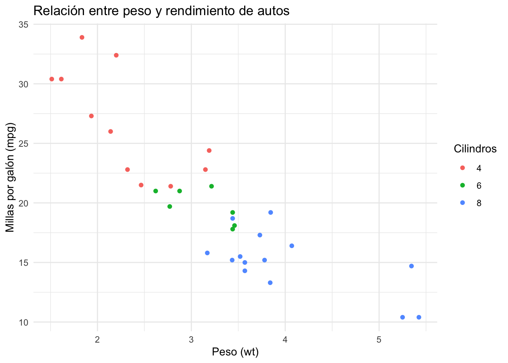
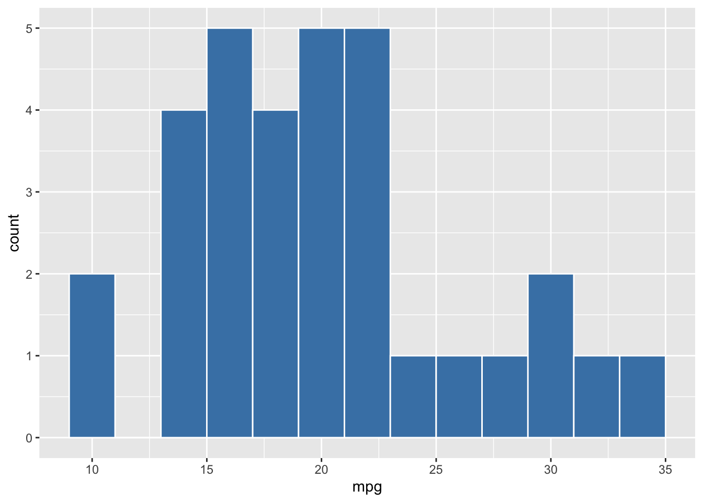
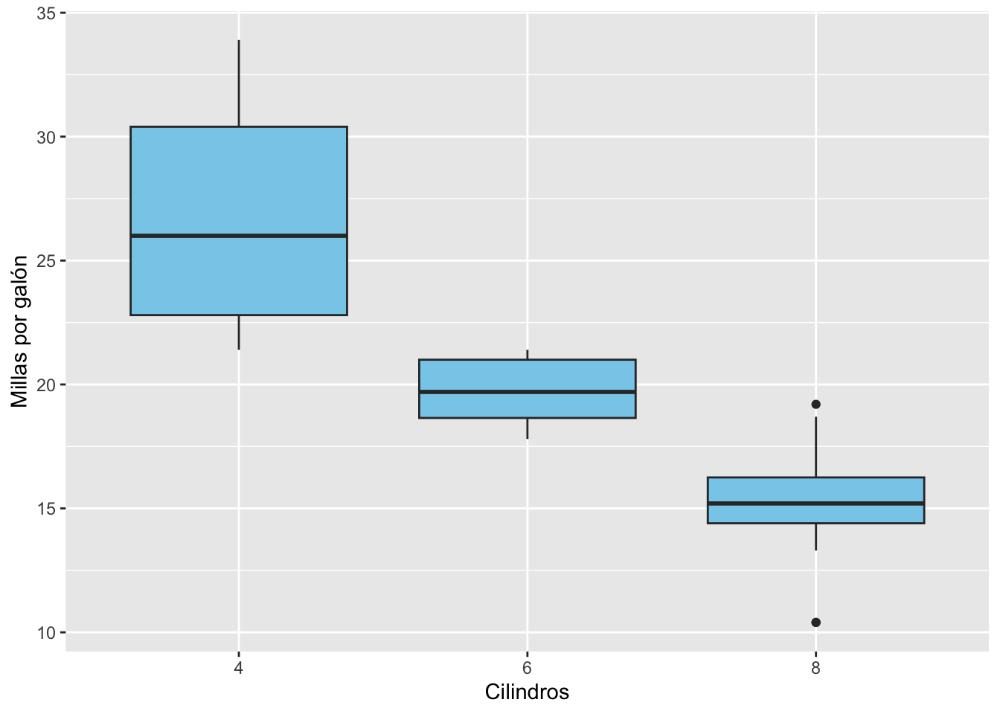

Chapter 4 ¿Qué es ggplot2?
ggplot2 es un paquete del Tidyverse para crear visualizaciones de datos de forma elegante, flexible y basada en una gramática clara.
La estructura básica de un gráfico en ggplot2 es:
Donde:
ggplot(data)indica el datasetaes()define los ejes o variables estéticas (x, y, color, etc.)geom_*determina el tipo de gráfico
Primer gráfico: mtcars
Usamos el dataset mtcars, disponible por defecto en R.
library(tidyverse)
# Gráfico de dispersión: peso vs. millas por galón
ggplot(mtcars) +
aes(x = wt, y = mpg) +
geom_point()
4.1 Añadir color por cilindros
Podemos mejorar el gráfico agregando color:
ggplot(mtcars) +
aes(x = wt, y = mpg, color = factor(cyl)) +
geom_point() +
labs(
title = "Relación entre peso y rendimiento de autos",
x = "Peso (wt)",
y = "Millas por galón (mpg)",
color = "Cilindros"
) +
theme_minimal()
4.2 Cambiar tipo de gráfico: líneas, boxplots, histogramas
Algunos ejemplos rápidos:
# Histograma de millas por galón
ggplot(mtcars) +
aes(x = mpg) +
geom_histogram(binwidth = 2, fill = "steelblue", color = "white")
# Boxplot de mpg por número de cilindros
ggplot(mtcars) +
aes(x = factor(cyl), y = mpg) +
geom_boxplot(fill = "skyblue") +
labs(x = "Cilindros", y = "Millas por galón")